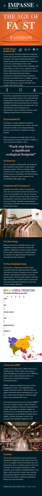
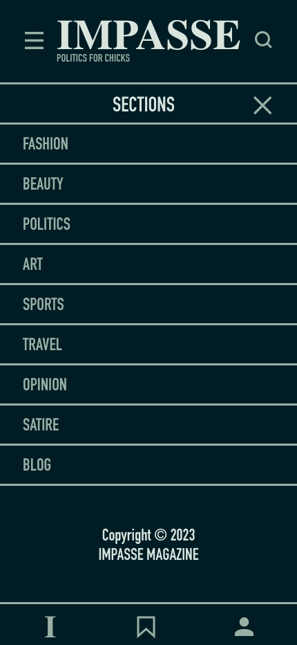
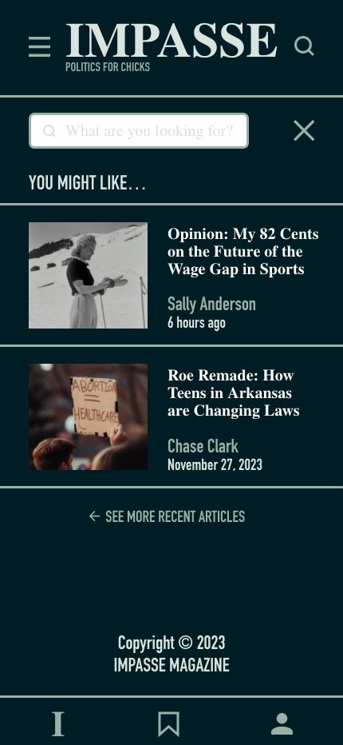
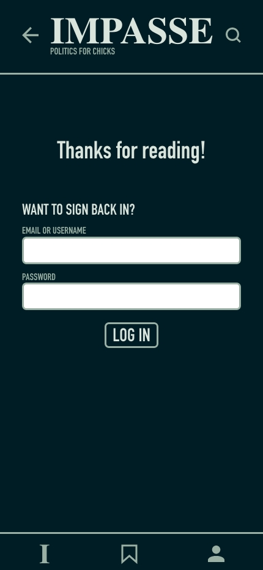
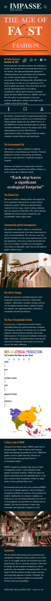
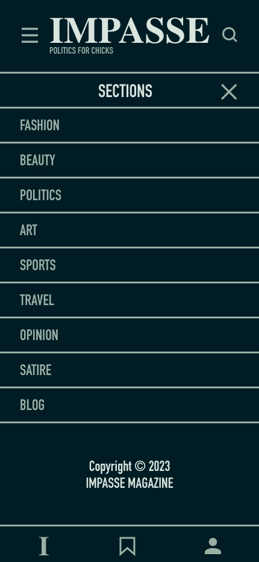
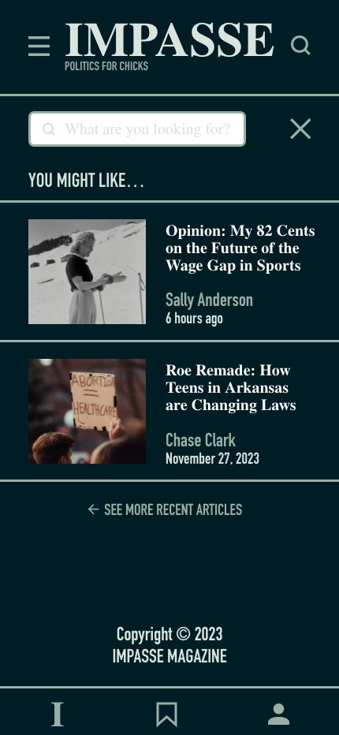
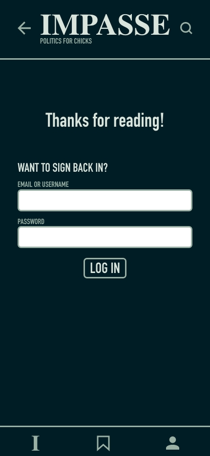

Design Strategy:
The concept behind this design was a very simple and clean look for the magazine. I wanted it to be very intuitive and easy to use, using very few buttons and clear symbols. Though I spent a lot of time experimenting with different transitions and other functions, I wanted to make sure that the animations didn’t cloud the vision or seem unnecessary. The users of this app would be primarily women and probably a younger demographic, so I wanted it to use functions and symbols that are common in similar news apps that already exist for this demographic.
Typefaces:
I used the same typefaces as in the magazine for my app. The title font, STIXGeneral, is sort of a timeless, fancy feeling font that captures the essence of the magazine while the other major font, DINCondensed, is more of a simple, futuristic feeling sans-serif font that works better for smaller text and also brings a more modern feel to some aspects of the app. I did find, however, that the original body font for the story didn’t translate as well for the app version, so I used STIXGeneral again for that.
Interactions:
I ended up using a lot of different interactive elements in my UI design. I started by just adding in page transitions through the buttons, and specifically making them slide transitions for more of a natural flow between pages. Because of this, I also ended up adding a few extra pages so that more of the buttons could be functional, such as the “saved articles” page, the “comments” page, and the “log out” page. Where I got the most creative, however, was with the animations. The most obvious example of this is the splash page, which I spent a lot of time on and used 5 pages for. I really liked the way this turned out and I feel that it made my app feel a little more official and realistic. I also used animation in the article to have the pull quote expand when scrolling, as well as to have the infographic bars pop out only when scrolling. I’m not sure how functional this would be in a real app because it requires the cursor to hover over the image, which you don’t have in an app, but for the purpose of this project, I think it looks nice. I also made the “save” button functional and the number increases when you press it as well. Finally, in terms of animated interactions, some of the text and symbols, such as “back to top,” the profile circle, the “log in” button, and “back to articles” get larger and/or change color when they are hovered over. Overall, I felt that these little additions made the design a lot more interesting and interactive.
Medium>:
I think the primary challenge in converting my magazine design to mobile was just rearranging all of the elements because I really liked the way I organized everything in the magazine and some elements worked to serve a specific design purpose in the magazine that couldn’t be translated well in the mobile version. It was hard to keep the same feel when the story and all of the elements had to fit into a small, vertical box instead, but I feel like I did a pretty good job of matching the design to the magazine using colors and fonts.
Growth:
I had never used XD or done any sort of UI design prior to this project, and because this is something that I am interested in pursuing as a career, I had a lot of fun with the whole project and just exploring the capabilities of XD. Throughout this course, I got to experiment with a lot of different programs that I had never used before and I really enjoyed coming up with concepts for each project and then bringing them to life in different ways.


 






